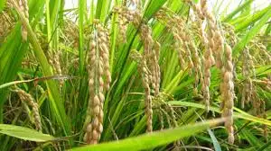
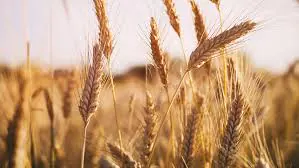
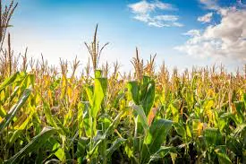
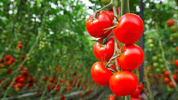
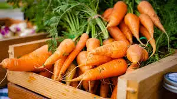
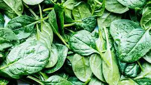
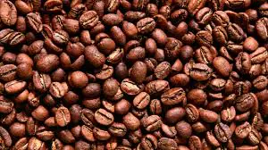
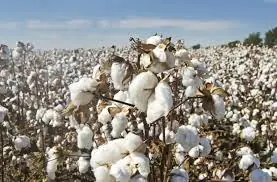
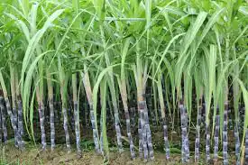

Comprehensive information on different crops including varieties, cultivation methods, soil requirements, and harvesting techniques. Our detailed profiles help you make informed decisions for your farm.
Grains

Rice
Staple food crop grown in flooded fields called paddies.
Soil: Clayey, Water: High, Season: Warm

Wheat
One of the world's most important cereal grains.
Soil: Loamy, Water: Moderate, Season: Cool

Maize
Versatile crop used for food, feed, and biofuel.
Soil: Well-drained, Water: Moderate, Season: Warm
Vegetables

Tomato
Widely grown fruit used as a vegetable in many cuisines.
Soil: Well-drained, Water: Moderate, Season: Warm

Carrot
Root vegetable rich in beta-carotene and antioxidants.
Soil: Sandy, Water: Moderate, Season: Cool

Spinach
Leafy green vegetable high in vitamins and minerals.
Soil: Rich loam, Water: Regular, Season: Cool
Cash Crops

Coffee
Popular beverage crop grown in tropical regions.
Soil: Volcanic, Water: Moderate, Climate: Tropical

Cotton
Natural fiber used in textile production worldwide.
Soil: Deep, Water: Moderate, Season: Warm

Sugarcane
Major source of sugar and biofuel production.
Soil: Loamy, Water: High, Climate: Tropical